“Real name” by the cloud-based social networking platforms Facebook and Google+ expressly attack anonymity and pseudonymity online, affecting the fundaments of political speech. Real name directives require users to register with a service using the name that is in their passport. The reasons given by cloud services for such real name requirements are vague—perhaps for fear of sounding too directly authoritarian. The preferred route, instead, is that of fatherly advice. Facebook claims that it has a real name policy “so that you always know who you’re connecting with,”(10) while Google states that it requires real names so “that the people you want to connect with can find you.”36 These explanations gesture 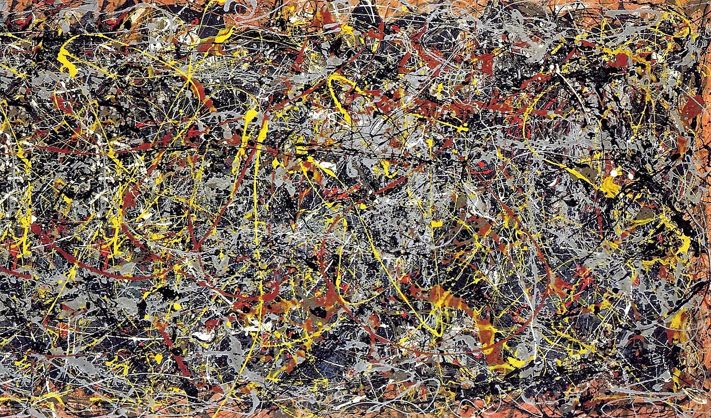 towards a conception of normative social arrangements—requiring that your use the same name that you’d use among your friends, family, or coworkers. Alexis Madrigal points out a certain irony in the Google+ real name requirement.
 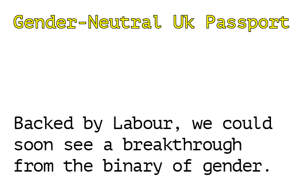
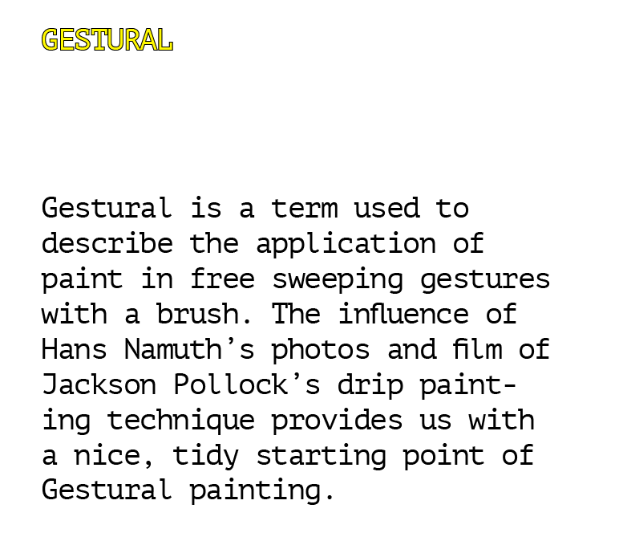
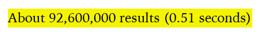
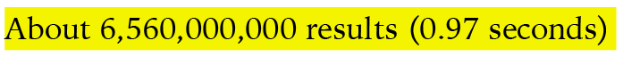
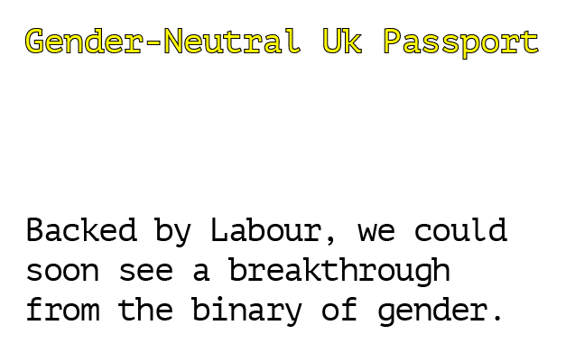
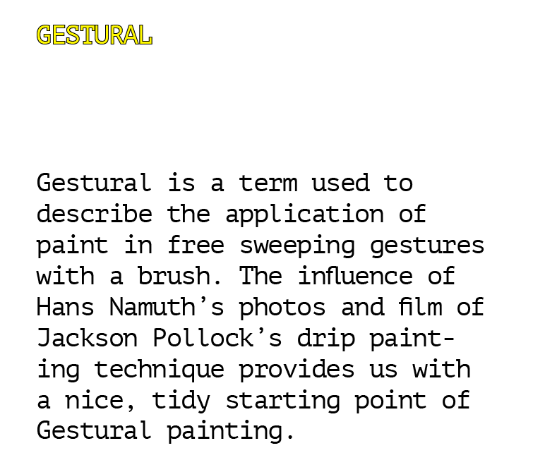
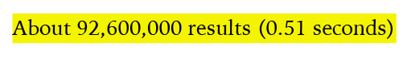
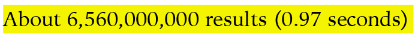
The kind of naming policy that Facebook and Google Plus have is actually a radical departure from the way identity and speech interact in the real world. They attach identity more strongly to every act of online speech than almost any real world situation does.37
Cloud providers such as Amazon use real name registration as a mechanism for accountability. Though Amazon still allows users to use a “pen name,” the trademarked “real name” attribution is advertised as having the ability to “potentially increase your reputation in the community” as a retailer, seller, or reviewer.38 Some see the real name badge as a step towards “fixing their flawed [and] exploitable review system” for reviewing books—a system notoriously dominated by biased “anonymous” users, often thought to be, and sometimes proven to be, other authors, their family members, or the books’ publishers.39
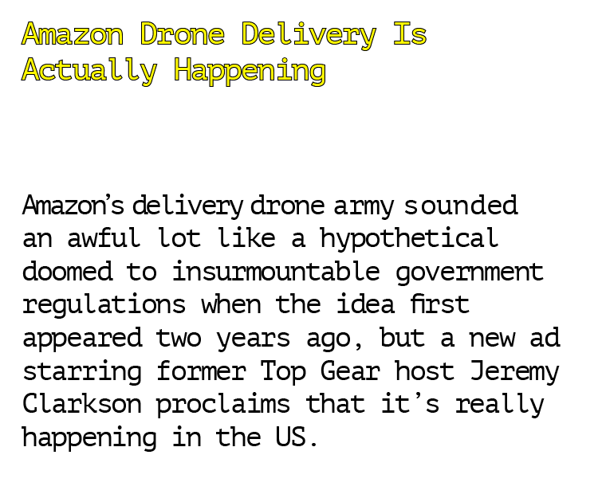 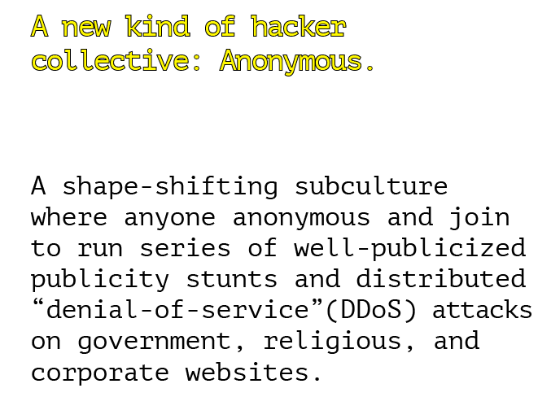Though Amazon’s reasoning for promoting the use of real names is more explicit than that of Facebook and Google+, one can imagine the marketing benefits of a synchronized real name system between social media and retail websites—and the connection that such a synchronicity might have with the government. Such requirements can be seen as aligned with plans of the US government to introduce a universal “trusted identity” or “internet ID” system for US citizens, a commission the White House granted to the US Commerce Department in 2011. According to White House Cybersecurity Coordinator Howard Schmidt, the effort entails nothing less than creating an “identity ecosystem” for the internet.40